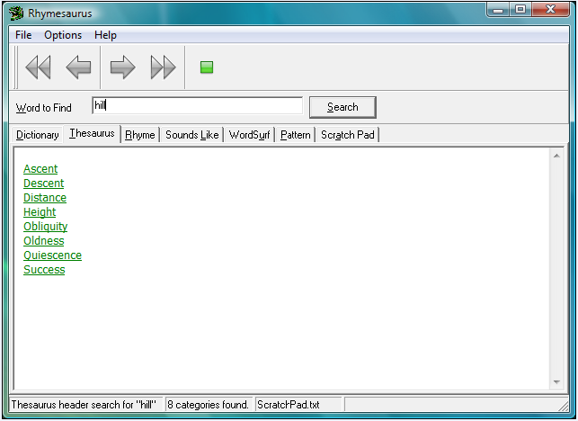
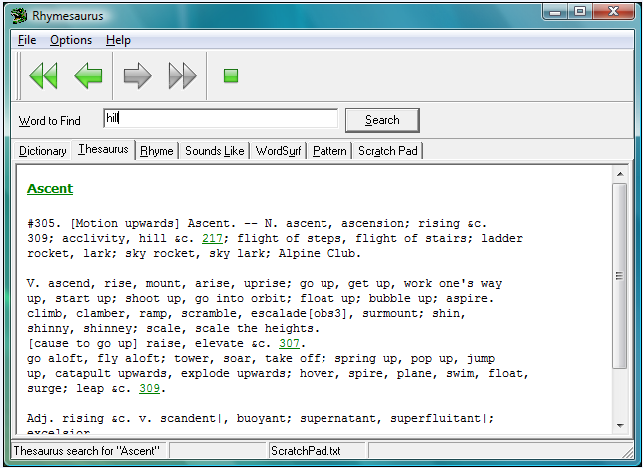
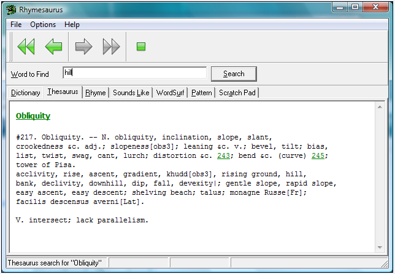

|
Thesaurus |
Top Previous Next |
|
The Rhymesaurus Thesaurus can help you find just the right word to use. To use the thesaurus, select it in the Search/Link Action area. When you type a word in the Word to Find box and click on the Search button, a list of the thesaurus categories that contain the word appears in the search result box. To view a category's entries, click on the category. In the example below, the word "hill" was looked up in the thesaurus. The list of categories found containing the word "hill" is listed in the search result box.

To view the entries for the first category, you would click on the word "Ascent" in the search result box. Then, the list of entries for that category is displayed.

Note that the entries for "Ascent," include other category numbers that contain the word originally looked up ("hill"). If these category numbers are hyperlinks, they link to entries that may be useful in your search. You may click on them to view the entries under a particular category number. If category number 217 listed in the example above is clicked, the entries for that category number will appear in the search result box. See below for an example of this.

|